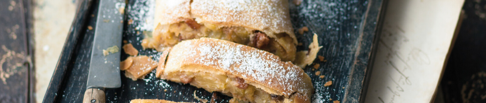

Viennese Applestrudel

One of the best-known Austrian desserts – Wiener Apfelstrudel (apple strudel) served with icing sugar and Viennese coffee.
Lo strudel, štrudl, štrudla, and štrukli – these are the names given by our neighbours in Italy, Slovenia, Slovakia, and the Czech Republic to this sweet dream of light pastry and its juicy filling. But in English, the only word which has made it into common use is the German “strudel”. That shows just how famous the Viennese Apfelstrudel has become. But it’s all too easily forgotten that this fine pastry once travelled an extensive route from Arabia via the Ottoman Empire and Turkey, before becoming resident in Vienna. However, the long journey was worth it!
Ingredients
For the strudel
- Strudel dough or puff pastry
- Approx. 1.5 kg / 3.3 lb apples
- 80 – 100 g / 1/3 - 1/2 cup sugar, as required
- 4 tbsp raisins
- Rum
- Lemon juice
- Cinnamon
- Powdered cloves
- Icing sugar for dusting
- Plenty of melted butter or 1 egg for coating
For the breadcrumbs
- 100 g / 1 cup breadcrumbs
- 3 tbsp butter
- 3 tbsp grated hazelnuts
How to make it
- Prepare the dough yourself, or have the shop-bought dough to hand. Steep the raisins in the rum and leave to soak.
- To prepare the nutty breadcrumbs, heat the butter in a pan until it bubbles up. Add the breadcrumbs and fry slowly over moderate heat until golden brown. Towards the end, stir in the grated nuts , cook through quickly, and remove from the heat.
- Peel the apples , cut into slices, and quickly sprinkle with lemon juice . Then, depending on the acidity of the apples, add a suitable amount of sugar and powdered cloves , and mix in a generous pinch of cinnamon . Pre-heat the oven to 180°C / 356°F and grease a baking tin with butter.
- Ideally, prepare the strudel dough in such a way that the strudel ends up laid onto a sheet of baking paper. Distribute the nutty breadcrumbs over around half of the dough. Scatter the apples and raisins over it. Coat the remaining surface of the dough generously with melted butter , fold in the edges at the sides, and roll up the strudel. Seal the ends well and lift the strudel into the baking tin using the baking paper (if using puff pastry, apply the apple filling in the centre, fold up the sides and edges towards the middle, and press the edges together firmly).
- Depending on the dough, coat with melted butter (for strudel dough) or egg (puff pastry) and bake for 40 – 50 minutes until golden brown (bake puff pastry slightly shorter). Remove the finished strudel, leave to cool down, and sprinkle with icing sugar.
Serve warm or cold.
Baking time: 40–50 minutes (slightly less for puff pastry)
Home